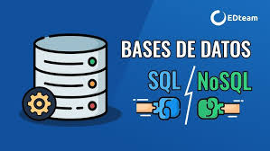

Una base de datos es un conjunto de datos organizados que permite un fácil acceso, gestión y actualización. Existen diferentes tipos de bases de datos, incluyendo bases de datos relacionales y no relacionales.
Los sistemas de gestión de bases de datos (SGBD) permiten crear y manipular bases de datos. Algunos ejemplos populares incluyen:
Las bases de datos son fundamentales para el desarrollo de aplicaciones, ya que permiten almacenar y recuperar datos de manera eficiente.